Fixtures TEST. États et limites. Les héros substitués le sont aussi dans la référence.
verified-functional · Portrait, blason et catégories structurées non enregistrés. Le rôle textuel est conservé.
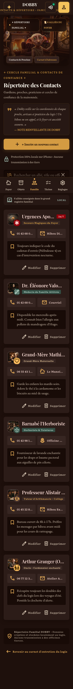
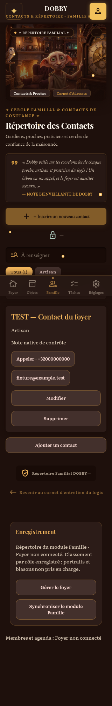
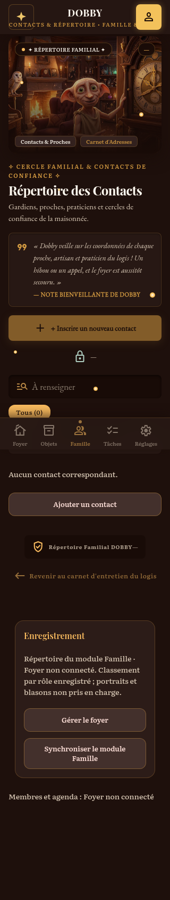
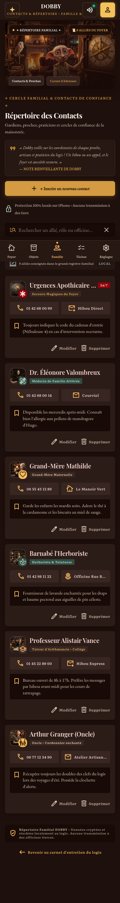
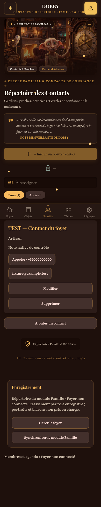
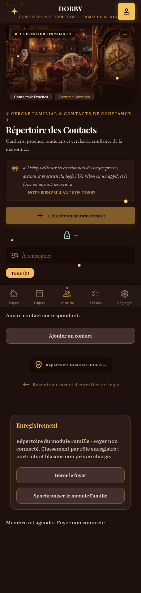
verified-partial · Portrait, blason et catégories structurées non enregistrés. Le rôle textuel est conservé.
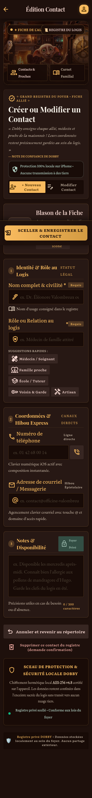
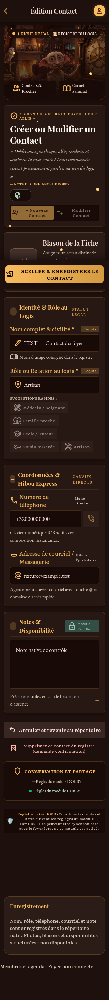
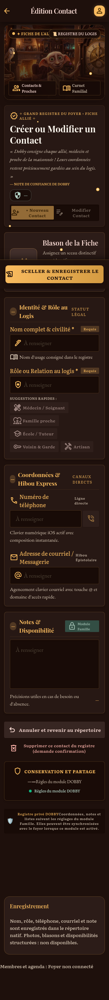
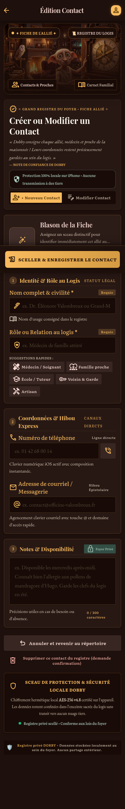
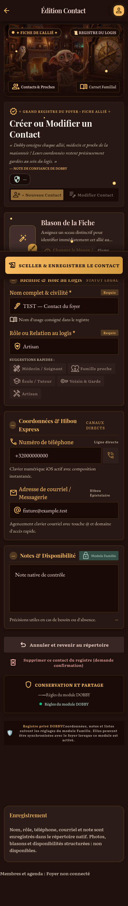
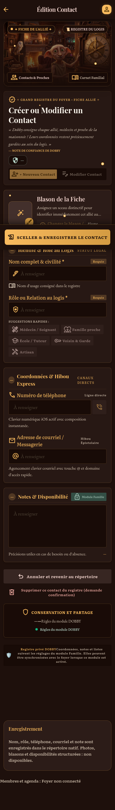
verified-partial · Mémos locaux : titre, contenu et mots-clés natifs seulement. Épinglage, auteur, partage familial et archivage non gérés.
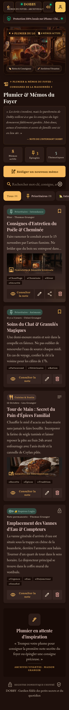
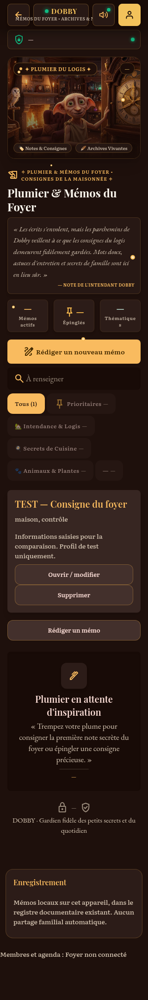
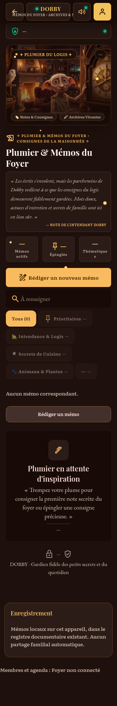
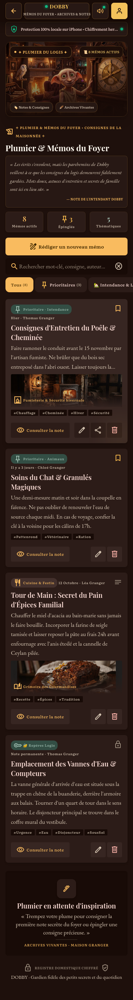
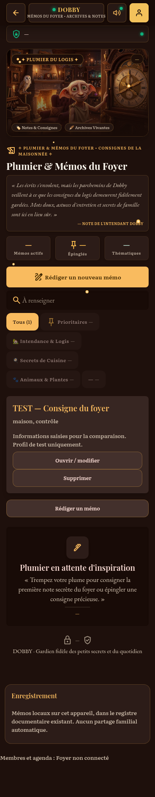
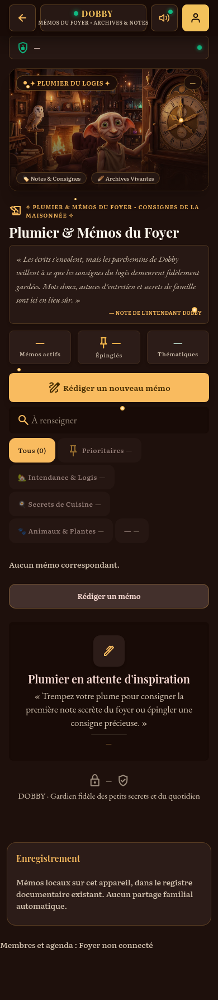
verified-partial · Mémos locaux : titre, contenu et mots-clés natifs seulement. Épinglage, auteur, partage familial et archivage non gérés.
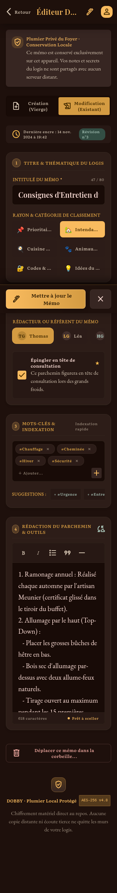
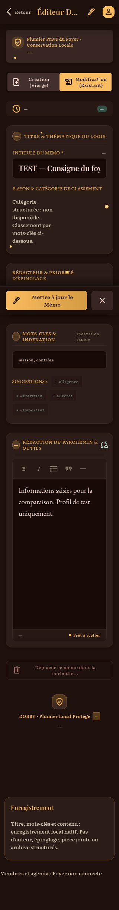
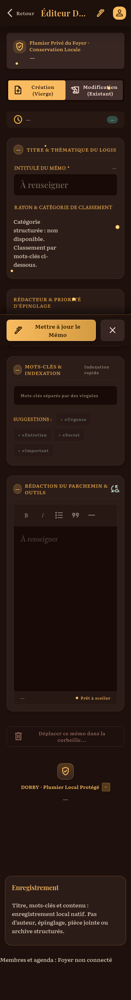
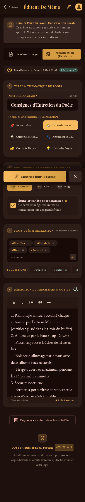
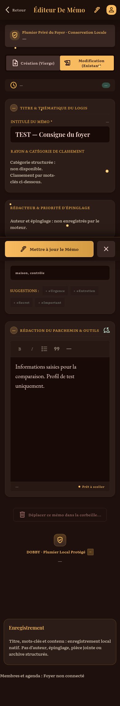
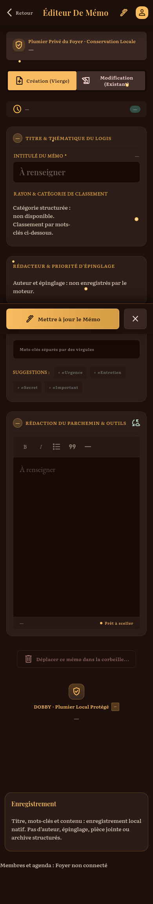
verified-partial · Listes natives : nom, éléments et coches. Catégories, attribution, échéances et renommage de liste non gérés.
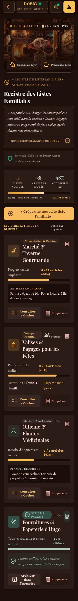
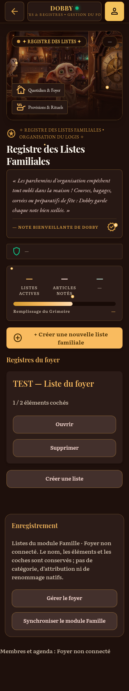
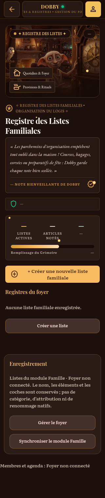
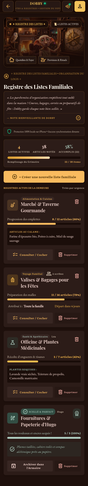
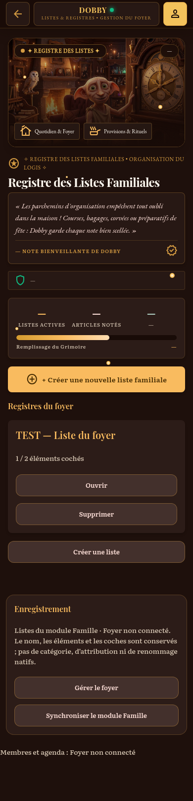
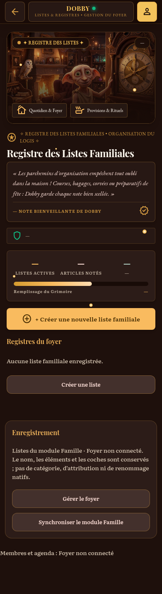
verified-partial · Listes natives : nom, éléments et coches. Catégories, attribution, échéances et renommage de liste non gérés.
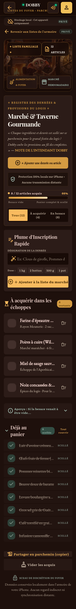
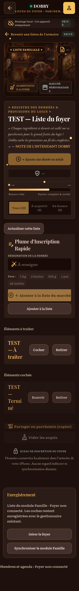
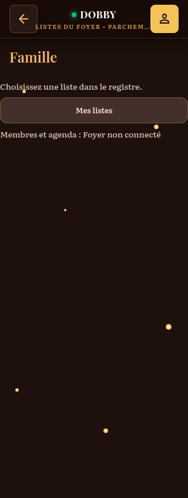
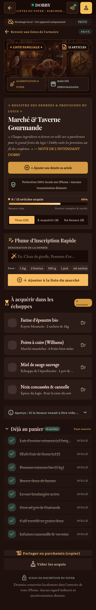
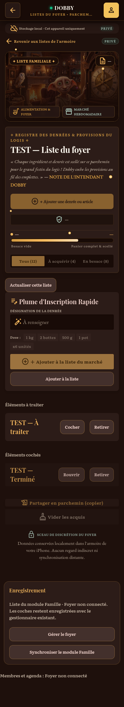
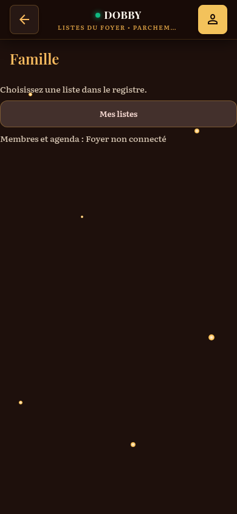